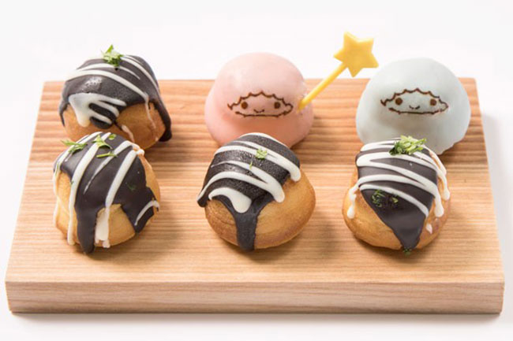
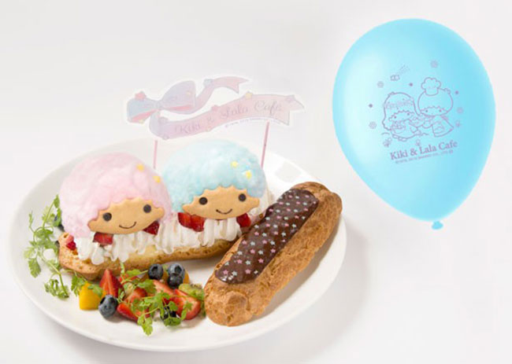
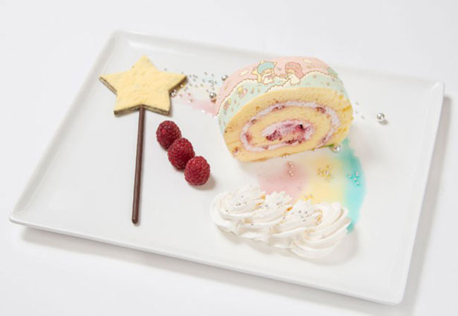

首頁
kikilala介紹

KIKI&LALA閃電泡芙 附氣球1,580日元
泡芙上有著可愛的雙子星肖像跟小緞帶，加上一旁附贈的氣球，好夢幻！

KIKI&LALA星星手杖蛋糕卷980日元
由LARA的星星手杖變出來的蛋糕卷，是最受歡迎的草莓口味！

星漢堡拼盤 1,350日元
牛肉與魚口味的成對漢堡，上面附有LALA手杖變出來的可愛糖果！


 首頁
kikilala介紹
首頁
kikilala介紹